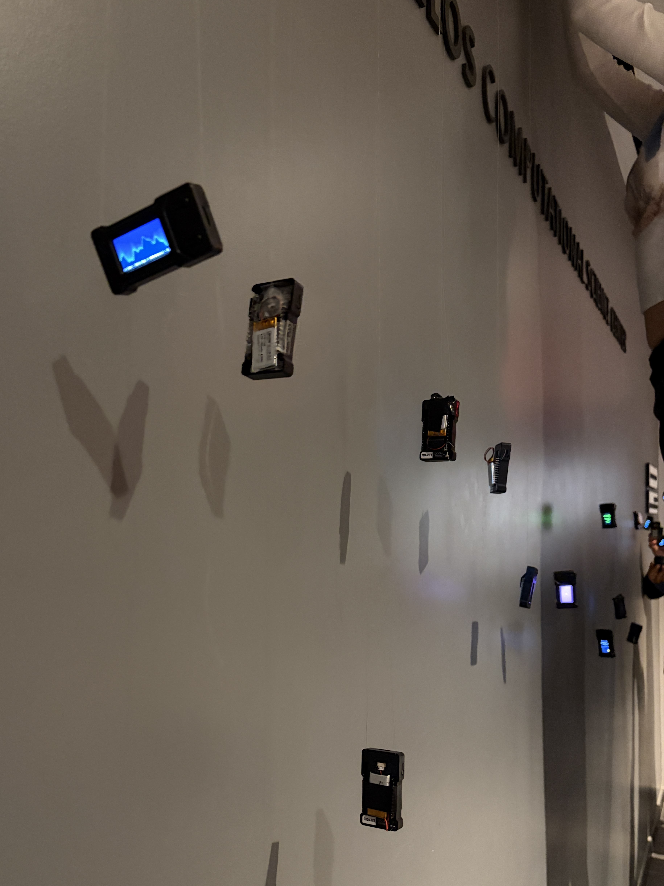

ESP32: Starstuff
Technical documentation: https://github.com/lucialchen/esp32-display.git
OVERVIEW
Continuing in the vein of receiving inspiration from daily interactions with my friends, my vision for this portfolio project
came out of a conversation with a friend I've made in our Creative Embedded Systems class about our first exposures
to generative AI art — WOMBO Dream — and how we both felt it created more genuine "art" from our prompts compared to the
more recent text-to-image models since it allowed us to choose a predefined art style. Coincidentally, we had both used the
app to make Spotify playlist covers, and so I decided to make my ESP display a generative aurora borealis modelled off of the
WOMBO Dream cover used for one of my favorite playlists, Starstuff. For my text element, I set the ESP to display a scrolling
list of song titles and artists from my playlist, keeping in mind that this would be used for our installation and allow others
to engage with the piece by getting a glimpse into the music that inspired it.
I came up with the generative element of this piece from wanting to make unique configurations of sine and cosine waves.
When the ESP32 is powered on, a random seed shifts the phase of the sine/cosine wave equations, producing a unique mountain silhouette.
The aurora is drawn column by column using sine waves to vary its height, with dots scrolling upward via modulo equations and fading
from green to pink as they move further from the mountains.
A Look at the Installation


Reflection
I encountered some technical challenges while working with both the software and hardware components this project.
Since I had never worked with Arduino before, I initially had some trouble setting up the visuals I had designed in my
head. I was stuck for a while on simply getting the scrolling text effect, since I was using a very large message
string that kept scrolling in two rows instead of one. I figured out how to fix this issue without changing my message
by setting setTextWrap to false.
For the hardware setup, running 'pio run' in the terminal kept returning "command not found" at first because PlatformIO wasn't
on the system path. This I fixed by opening the project through the PlatformIO extension in VS Code and using its built-in terminal instead.
I also realize that I exceeded the hardwware constraints of my project, as my battery ran out of power during the installation. I would
caution future developers using this setup to be mindful of the power consumption of the ESP32 and to avoid plugging in the battery except
for a quick test before usage in a display.